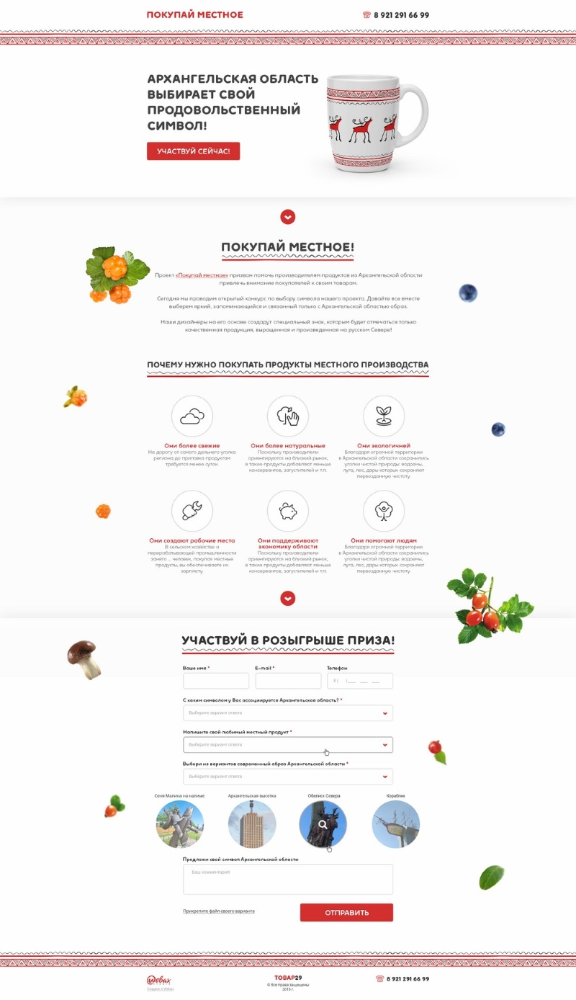

СИСОПТ
Система оптового самообслуживания
Моя работа:
-верстка (html, css, bootstrap-3, jquery)
-доработки самописа (PHP + SOAP + AJAX)
-руководитель разработки и внедрения
Github: github.com/7oa/dev.sysopt.ru
-верстка (html, css, bootstrap-3, jquery)
-доработки самописа (PHP + SOAP + AJAX)
-руководитель разработки и внедрения
Github: github.com/7oa/dev.sysopt.ru
Интернет-магазин для компании Кофе Плюс
кофеплюс.рф
Моя работа:
-адаптивная верстка (html, css, bootstrap-3, jquery)
-программирование (cms Битрикс Малый Бизнес)
-адаптивная верстка (html, css, bootstrap-3, jquery)
-программирование (cms Битрикс Малый Бизнес)
krao29.ru
Корпоративный сайт-визитка для АО «Корпорация развития Архангельской области»
Моя работа:
-верстка (html, css, jquery)
-программирование (cms Битрикс Старт)
-лк инициатив
Особенности: версия на русском и английском
-верстка (html, css, jquery)
-программирование (cms Битрикс Старт)
-лк инициатив
Особенности: версия на русском и английском

Лендинг для проекта "Покупай местное" с параллакс-фоном
товар29.рф
Сайт компании Интерлогика
interlogika.ru
Моя работа:
-адаптивная верстка (html, css, jquery)
-программирование (cms Битрикс Старт)
-адаптивная верстка (html, css, jquery)
-программирование (cms Битрикс Старт)
Сайт группы компаний Бонд
bondgroup.ru
Моя работа:
-верстка
-программирование (cms Битрикс Старт)
-верстка
-программирование (cms Битрикс Старт)
all-solovki.ru / visit-solovki.ru
Сайт-визитка гостиниц Соловки и Соловецкая слобода
-верстка (html, css, jquery)-программирование (cms Битрикс Старт)
Особенности: версия на русском и английском
onpomor.ru
Сайт-визитка для Национального парка «Онежское Поморье»
-верстка (html, css, jquery)-программирование (cms Битрикс Стандарт)
Особенности: подключение платежной системы Яндекс Касса к странице получения разрешений onpomor.ru/permit/
lazur29.ru
Интернет-магазин для ТСЦ «Лазурь»
-верстка (html, css, jquery)-редизайн (натягивание новой верстки, cms Битрикс Бизнес)
стратегия29.рф
Информационный сайт для регионального Форума «Народная стратегия Архангельской области»
-верстка (html, css, jquery)-программирование (cms Битрикс Старт)